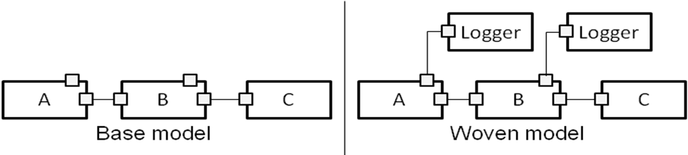
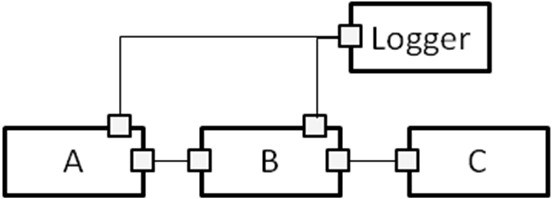
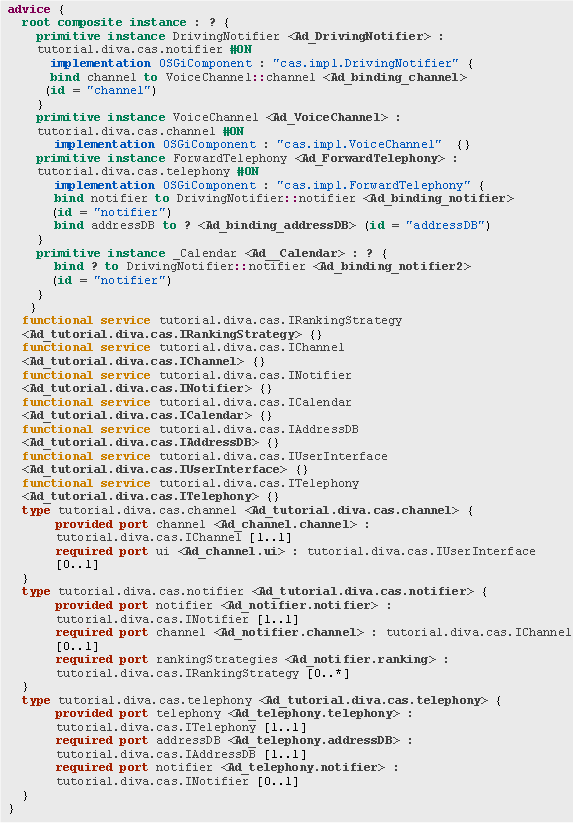
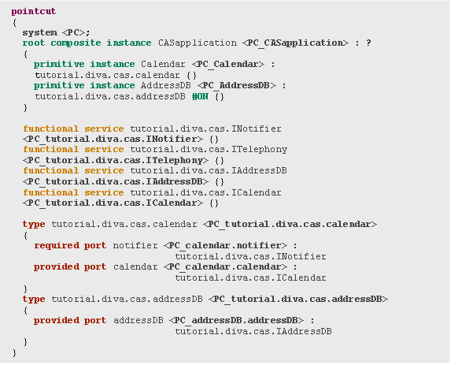
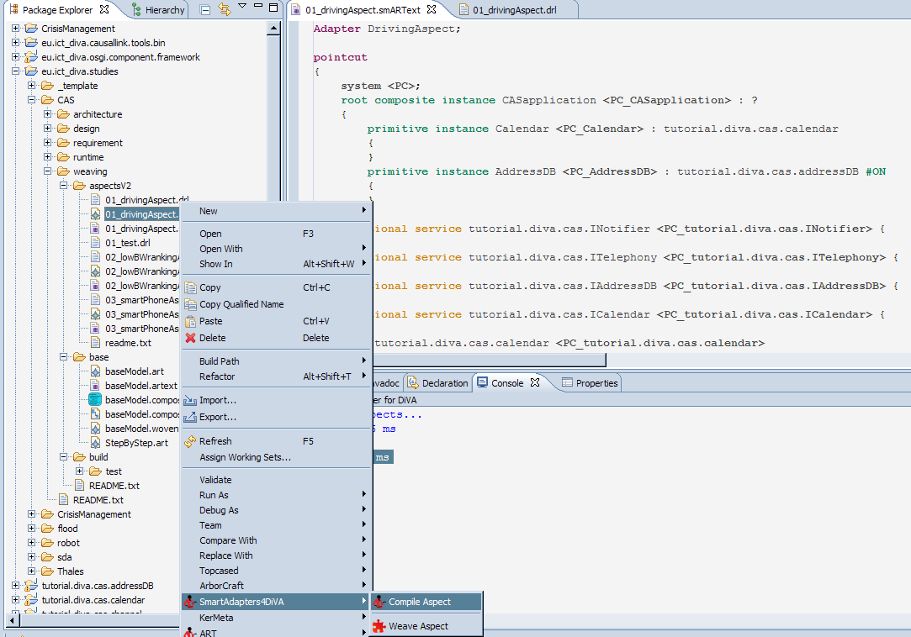
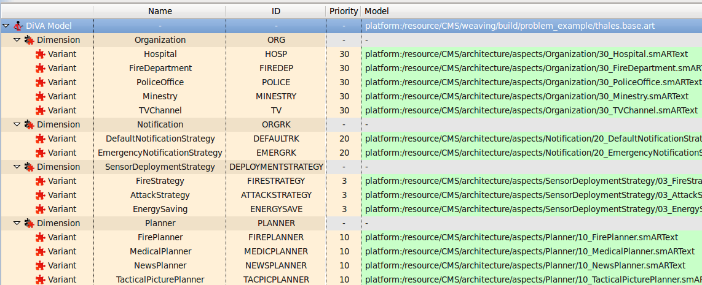
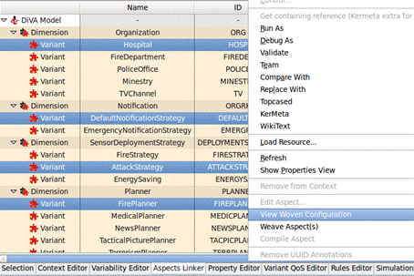
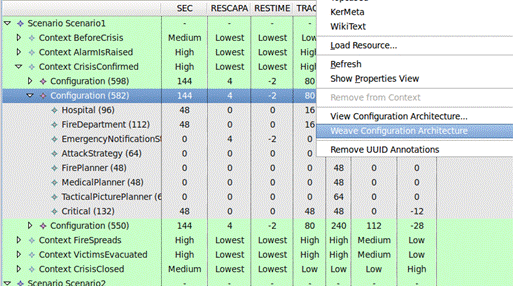

In the DiVA approach, the variability in the system is implemented by separating the variants defined in the adaptation models in aspect models which can be woven in the base application whenever this variant is selected in a Configuration. Figure 46 represents the main tasks of the definition of the aspect models.
Figure 46: Practice 3 – runtime architecture definition.
As illustrated by the diagram, the process of creating the aspect models is
highly iterative and incremental. The process should also be iterative on a
coarser level: the designer should not wait for the adaptation model to be
fully complete to start modelling aspects but rather take care of aspect
definitions phase after each iteration on the
adaptation model. The next paragraphs present a short description of each task
of the process. Details about the tasks are presented in the next sections.
Task one involves modelling the base architecture of the adaptive systems. This base model should contain all the elements (services, component types and instances (potentially already linked with bindings)) that should be present in all the configurations. This task iterates until the base model is complete.
Task two involves modelling the architectural aspects of the adaptive systems that will be woven into the previously defined base model. During the first 3 steps of this task, the designer defines its aspects: advice (what the aspect brings), pointcut (what the aspect needs to be woven) and composition protocol (how to weave the advice into the pointcut). Both the advice and the pointcut are designed using the same methodology as the base model (services, component types, and instances and bindings). Aspect models are finally compiled into operational versions that should be tested. The process iterates until all variants (from Practice 2) have been refined into aspect models and successfully tested.
During Task three the designers test the weaving of whole configurations (i.e., sets of aspects) and not simply the weaving of individual aspects. To resolve the dependencies between aspects, the designer can specify priorities to ensure that one aspect will be woven before or after another one. Using the outputs of Practice 2, he can then choose a configuration and actually weave this configuration in order to obtain the overall architecture corresponding to this configuration. The process iterates until all the critical configurations have been successfully woven.
It is important to note that this methodology practice does not provide guidelines to fully design the architecture of the system under development but focuses on runtime adaptation issues. The DiVA methodology is meant to be usable together with a wide range of software development methods and thus does not assume the availability of any type of design artefacts or architecture models. This section describes the development of a set of architecture models required for implementing DiVA runtime adaptation. Depending on how the rest of the system is (or has been) developed the developer might be able to use existing design artefacts as an input to this practice.
Description
In the DiVA approach the base model is an architecture model defined using the Architecture at Run-Time (ART) meta-model (see D3.2 and D3.3). The intent of the base model is to provide the framework in which the variants of the application will be woven at run-time. This base model should only include elements which are directly relevant to runtime adaptation. The parts of the architecture of the system which are fixed should not be detailed but encapsulated in a set of coarse grained logical components. This is to prevent manipulating at runtime model numerous model elements with no relevance to adaptation.
If architecture models have been developed
as part of the design of the system they are a good input to the creation of
the base model but in most cases they should not be reused directly since the
ART base model serves a slightly different purpose. Some parts of the design
architecture models will be included in the base models, others will have to be
abstracted and some will be included in some aspects. The purpose of the ART metamodel is to represent dynamic architectures, i.e., the
architecture of a running system. It mainly considers components (as black
boxes), bindings (connections between components) and attributes of components.
How-to
DiVA Studio provides an implementation of the ART meta-model and two editors for it. The first editor is a tree editor which allows browsing the ART models. The second is a text editor which provides a more user friendly environment to edit and view architecture models. A bi-directional transformation is provided between these 2 formalisms. Details about the ART meta-model are provided in D3.2 and D3.3. ART unifies the concepts found in famous languages for modelling architectures (UML components, SCA) and in platforms (OSGi, Fractal, OpenCOM).
The first step consists in defining the services manipulated by the system. In the OSGi implementation of the runtime adaptation framework, these services should be named according to the qualified name of existing Java interfaces. Then, it is possible to define component types. Each component type is a factory to instantiate component instances. It basically describes the services it requires and it offers. Finally, it is possible to describe an assembly of component instances (links with bindings). This architectural model constitutes the base model i.e., it contains the component instances that must be present in all configurations of the system.
CRM example application
The
following script illustrates the base model of the CAS system. In all
configurations of this system, we should find these components:
The base
model thus contains these components and related component types and services.
The following listing presents the base model using the ART textual syntax
(details of the syntax and more information about the editor can be found in
D2.2 and D5.2):
Figure 47: CRM Base Model in ART textual syntax.
In the listing, the element in yellow correspond to the definition of services, the elements in red correspond to the definition of component types and the elements in green and blue correspond to the instances and links with implementation classes. A very similar syntax is used in the next section for the definition of the pointcuts and advices of the aspect models.
Description
The models are used to encapsulate the variants or features of the system which can be added or removed at runtime. DiVA uses state of the art aspect oriented modelling techniques to represent and weave these aspects in the base model defined previously. This task consists of associating an aspect model to each variant defined in the adaptation models. These variants can be tested by composing them into the application base model.
During this phase of the development, the designer has to create a set of
aspects which implements the functionalities of the variants specified in the
adaptation model. In DiVA we use a wide definition
for “Aspects”, there is no requirements for these
aspects to cross-cut the base model. Experience shows that modularizing
variants in separate units sometimes requires all the power of pattern-matching
for join points detection and complex weaving protocols and sometimes only
requires simple composition of components. The DiVA
approach supports all the range in order to allow implementing each variant
with one aspect.
How-to
The AOM approach adopted in DiVA relies on the SmartAdapters approach. Originally, SmartAdapters
has been applied to Java programs and UML class diagrams. More recently, it has
been generalized to any domain specific modeling language. In the DiVA project a specialization for ART models is used. More
details about SmartAdapters and its specialization
for DiVA are given in D3.3.
When using SmartAdapters, an aspect is composed
of three parts that should be designed in this order:
The pointcut model allows quantification (i.e., to match several join points). The most precise is the pointcut model, the smallest is the set of potential places where the aspect can be woven, and vice versa. For example, if a component’s type is not specified in the pointcut model, this component would be matched by any of the base architecture’s components, irrespective of its real type.
It is possible to specify if some elements of the advice model are unique
or not. An element that is unique will only be woven once, even if there exist several join points. We propose to illustrate this
notion on a very simple (yet very common) log aspect, illustrated in Figure 48.
Figure 48: A
Simple Log Aspect.
Basically,
this aspect will link the logger component to any component that requires the
Log service. Let us consider the simple base model illustrated in the left-hand
side of Figure 49. Components A and B require the log
service. If the logger component is not unique, we end up with the result of
the right-hand side of the figure: each component that requires the log (ie, each join point) is connected to its own logger
component.

Figure 49:
One possible weaving of the log aspect.
In the case
the logger component is unique, we end-up the result depicted in Figure 50. In this case, all the components
that require the log service are linked to a unique instance of the log
component.

Figure 50:
Another weaving of the log aspect.
After an aspect
model has been designed it has to be compiled into Java/EMF + Drools code.
Indeed, the runtime and design-time weavers will leverage this generated script
to actually weave the aspect. Details about the compilation process are also
given in D3.3, and a practical example is given in the next “CRM example
application” paragraph.
Once the
aspect has been specified, the last task of this practice is to test it. At
this point not all aspects have been implemented so it is not possible to
create complete configuration models but as soon as one aspect has been
developed it should be validated in isolation. Several options can be used to
test the aspect. If the aspect can be directly composed with the base model
then the designer of the aspect should weave the aspect and check the resulting
composed model. If the aspect needs some elements which are introduced by
another aspect then the designer can weave these aspects in the base model
first, or create manually another base model which includes enough elements to
test the aspect. The objective of this test is to make sure that the aspect can
be composed with a base model and yield configurations expected by the
developer.
CRM example
application
We propose
to illustrate SmartAdapters and its editor on the
“Driving Aspect”. This aspect extends the two components defined in the base
model (Calendar and AddressDB). The advice for this
is composed of 3 components (DrivingNotifier, VoiceChannel and ForwardTelephony),
as well as a stub component that is present simply to hold a binding. Figure 51 presents the listing for the advice
of the aspect.

Figure 51: Advice for the Driving aspect of the CRM system.
Once the
advice is defined, the pointcut is required to specify
where it should be composed with the base model. Figure 52 presents the listing of the pointcut.

Figure 52: Pointcut for the Driving aspect of the CRM system.
Last, the composition protocol has
to be defined. In this example it simply binds the components and moves them
into the base model.
Figure 53: Composition protocol for the Driving
aspect of the CRM system.
The syntax for both the aspect’s pointcut and
advice is close to the ART syntax used to define the base models. The main
difference is that in the aspects the definition of incomplete models has to be
allowed. In order to make this possible the syntax is relaxed to allow the
omission of some elements and unique IDs are added (in bold in the listings) in
order to be able to refer to objects from the composition protocol. Populating
these unique IDs is important to ensure the consistency of the aspect models.
Once an aspect is defined it has to be compiled to a form which can be
directly woven in a base model. In order to compile an aspect, right-click on a
.smART file and select “Compile Aspect” as illustrated in figure Figure 54. A .smART file can be
obtained from the .smARText file by right-clicking on
it and selecting the transformation in the ART sub-menu.

Figure 54:
Screenshot of the compilation of an aspect using DiVA
Studio.
The compilation of an aspect generates a .drl
file which is not intended to be modified. This file can be used both at design
time and at runtime to weave the aspect into a base model.
The last task for the definition on an aspect is to weave them in order to
check that the obtained models are satisfactory. Aspects can be woven in a base
model by selecting the “Weave Aspect” item in the DiVA
studio menu. At this point not all aspect are available to check full system
configuration but aspects should be tested individually on the application base
model or on manually made base models. It is important to detect and correct as
many problems as possible before composing sets of aspects to make complete
configurations.
Description
The last
task is concerned with the integration and validation of the set of aspects
implementing the variability in the adaptive system. At this point the
individual aspects and the base model should have been defined and tested in
isolation. In this task the aspect are brought together and applied to the base
model to create complete configuration of the adaptive system.
There are three sequential tasks to complete this task:
- The specification of aspects priorities,
- the selection of a set of test configurations and
- the validation of the configurations obtained by weaving the models corresponding to these configurations.
The specification of priorities for the aspects is used to impose an order when weaving multiple aspects in a configuration. Two aspects with the same priority will be woven in any order and aspects with a higher priority will be woven after aspects with a low priority.
To define the priority of the aspects, the designer should identify the conflicts and dependencies between the aspects which have been defined. Conflicts between aspects can be due to two main reasons:
In case of conflict between two aspects, it is important to check that this conflict is explicit in the adaptation model. If the conflict has not been identified in the adaptation model the designer should either add a constraint in the adaptation models or re-design the aspects to remove the conflict. The dependencies between aspects can then be used to assign priorities between aspects. If an aspect depends on another it should have a higher priority in order to make sure that it is always woven before the aspect it depends on. Two aspects with the same priority should have no interactions and will be woven in a non deterministic order.
The selection of a set of test configuration is required to test that different selections of aspect can be successfully woven and that appropriate configurations are obtained. The set of configuration can be selected from the test scenarios used to validate the adaptation model. The designer should include configurations which cover at least once every aspect that has been defined and potential aspect interactions. The woven model should be checked for well-formedness but the designer should also check that the obtained configurations fulfil the requirements of the system for the specific context in which the configuration would have been selected.
How-to
Once the base and the aspect models are created they have to be linked to the adaptation model. This is done by using the “Aspect Linker” tab in the adaptation model editor. Figure 55 presents a screenshot of the editor.

Figure 55:
Screenshot of the Aspect Linker tab of the adaptation model Editor.
The first line of the editor allows linking the adaptation model to the base model. The rest of the table allows setting the aspect model and the priority for each variant of each dimension. After the base model and the aspects have been linked in the editor, the adaptation model editor provides support for editing, compiling and weaving aspects.

Figure 56:
Weaving and visualizing arbitrary configuration.
Figure 56 shows how the tool can be used to weave and visualize the configuration corresponding to an arbitrary set of aspects by selecting a set of variants. If only one variant is selected the tool allows editing and compiling the aspect model attached to this variant. These functionalities should be used in order to unit test the aspects and to adjust the variant priorities in order to reseolve conflicts between variants. It is important to note that the tool allow weaving any combination of aspects and does not check that the particular set of variant which are selected makes a valid configuration.
Once each aspect has been validated, the weaving of more realistic test configuration can begin. The idea here is to use the set of test contexts which have been used to validate the model itself, and then weave the configuration corresponding to these model in order to check that the obtain models conforms to the requirements of the system. To assist in this task the adaptation model simulator allows weaving and visualizing the configurations produced by the simulation. Figure 57 presents a screenshot of the tool.

Figure 57:
Weaving and visualizing configurations.